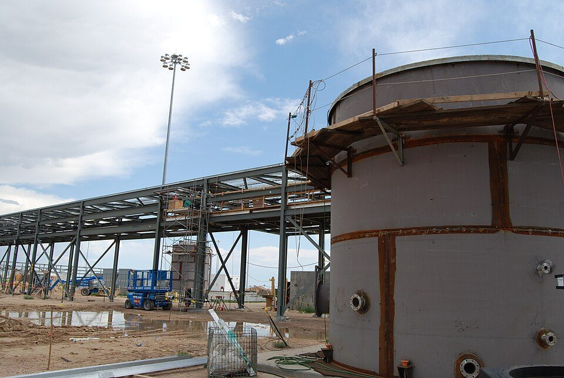
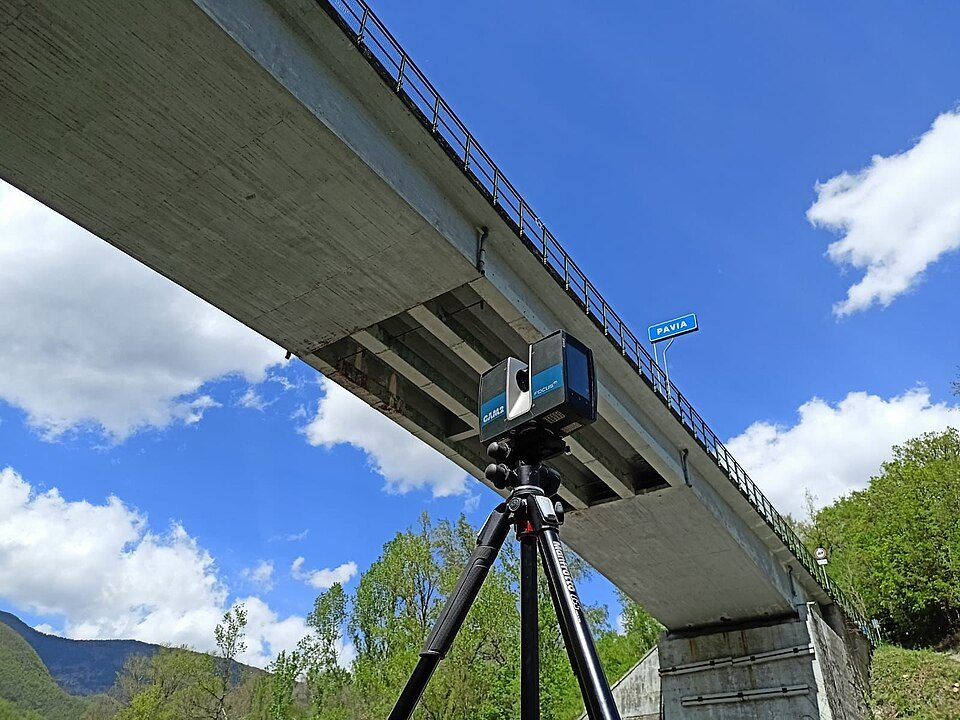

プラントの3Dモデルはどう作られるのか？ 設計の流れ、仕様とカタログ、図面の書き出し、点群による既設の3D化、主なソフト
要点まとめ
石油・化学などのプラントの設計では、機器や配管を3Dモデルにして、ぶつかり合いを確かめたり、図面や部品の数量を自動で出したりします。この記事では、新しく建てるプラントと、すでにあるプラントの3Dモデルの作り方を、ソフトウェア会社のヘルプやエンジニアリング会社の公式発表でまとめました。設計レビューのソフトの操作はNavisworks Simulateの操作ガイド、業界の話はプラントエンジニアリングとはにまとめています。

なぜ3Dモデルを使うのか
数千〜数万本の配管を、ぶつからないように通す
配管・電気・構造などの干渉を、設計の段階で見つける
日揮グループの採用サイトは、配管設計（レイアウト）の仕事を、機器や構造物の配置と高さを決め、数千〜数万本にもなる配管のルートを決めて3Dモデルにしていく仕事だと説明しています[1]。千代田グループの配管エンジニアの募集では、電気ケーブルと配管がぶつからないよう電気エンジニアと調整しながら3D設計を行うとしています[8]。AVEVA E3D Designは、分野をまたぐ干渉を見つけて解消できるとしています[9]。
新しいプラントの3Dモデルができるまで
新しく建てるプラントでは、プロセス設計の図面をもとに3Dモデルを育てていきます。モデルの完成度に応じたレビューの段階は、発注者が設計会社に示す仕様書の例です。
- はじめ
PFD・P&IDなど、プロセス設計の図面
すべての詳細設計のベースになる[1]
- 配置
機器・構造物の配置と高さを決める
- 30%
全機器の位置と向き、主な梁・柱、主要な配管、パイプラック
- 60%
その他の配管がほぼ完成。メーカーの確定情報を入れる
機器の寸法・重量・ノズルの向きなど[12]
- 90%
計装を含めてほぼ完成。最終のコメントを出す
- 100%
完成時の状態（アズビルト）を表すモデル
レビューの段階と中身は、会社や案件によって違います（例はTata Steelの3Dモデル仕様書、2018年4月版）[12]。
P&IDと3Dモデルが合っているかを照合する
P&IDを直しても、3Dモデルは自動では変わらない
AutoCAD Plant 3Dのヘルプによると、P&IDのデータと3Dモデルのデータはプロジェクトのデータベースに別々に保存されるため、両者を照合する機能があります[13]。発注者の仕様書の例では、配管はP&ID・ラインリスト・配管仕様に従って設計し、3Dソフトの配管仕様とプロジェクトの配管仕様の食い違いは認めないとしています[12]。
部品は仕様とカタログから選ぶ
カタログからスペックをつくり、スペックの部品で配管する
決められた部品しか使えないので、部品どうしが確実に合う
AutoCAD Plant 3Dのヘルプは、工業規格の部品を集めたカタログからスペックをつくり、スペックを使って3Dモデルの配管をすると説明しています[2]。AVEVA E3D Designは、仕様の決まった部品と材料の仕様でモデルを作り、部品どうしの適合を強制するとしています[9]。
図面は3Dモデルから書き出すので、モデルと食い違わない
アイソメ図には、寸法と部品表が入る
AutoCAD Plant 3Dでは、3Dモデルから注釈と寸法の入ったアイソメ図（配管を立体的に描いた図）を作れ、アイソメ図には通常、部品表（BOM）が入ります[14]。アイソメ図は3Dモデルから書き出すものなので、ほとんどのCAD管理者はアイソメ図の編集を許可しないとしています[3]。平面図などのオルソ図も3Dモデルから作り、モデルが変わったら更新して反映できます[4]。
既設のプラントを3Dにする
レーザースキャナーで、現地の形を点の集まりとして取り込む
1秒間に200万点を測るスキャナーもある（メーカーの説明）
Leica Geosystemsは、レーザースキャンで既設のプラントを記録し、計画・製作・干渉チェックのための3Dモデルを作れると説明しています[5]。危険な場所でも、離れた所から現況のデータを取れるとしています[5]。同社のブログでは、スキャナーRTC360は1秒間に200万点を測り、重さは6kgです[17]。

点群から配管を自動で抜き出して、モデルや図面にする
点群のまま設計ソフトに読み込んで使う方法もある
トプコンは、点群を読み込むと配管などを自動で抜き出して3Dモデルを作るソフトを発売しています[6]。日揮グループのブラウンリバースは、360度画像と点群から配管ルートの中心線を3次元で抜き出す機能（2023年）と、そこからアイソメ図を出す機能（2024年）を提供しています[18][19]。Forte 3Dは、既設部分をモデル化しなくても、点群を設計の画面に取り込んで全体を表示できるとしています[7]。
| 項目 | 新しく建てるプラント | 既設のプラント |
|---|---|---|
| 出発点 | P&IDと配管の仕様[12] | 現地にある実物の形[5] |
| データの取り方 | 設計者がスペックの部品を3Dで置く[2] | レーザースキャナー・360度画像[18] |
| 主な使いみち | 設計・図面・部品の数量[14] | 改造の設計・保全・干渉チェック[5] |
主なソフトと、データの規格
| ソフト | 主な役割 |
|---|---|
| AVEVA E3D Design | 複雑な産業設備向けの3D設計。図面・レポートの自動作成、スキャナーの点群の読み込み[16] |
| Forte 3D（旧 Intergraph Smart 3D） | 設計ルールを強制して正確さを保つ3D設計。点群の表示[7] |
| AutoCAD Plant 3D | スペックとカタログによる配管、アイソメ図・オルソ図の作成、P&IDとの照合[2][14][13] |
| Navisworks | いろいろなソフトのモデルを1つにまとめてレビュー。干渉チェックはManageだけ[22][20] |
Forte 3Dは、2026年5月22日にHexagonから分かれた会社Octaveが、Intergraph Smart 3Dの名前を変えたものです[7][23]。各社が示す効率化の数字は、メーカーの説明です。
設計から運転まで、データを受け渡すための規格がある
ISO 15926、CFIHOS、DEXPIなど
ISO 15926は、石油・ガスの生産設備を含むプロセスプラントのライフサイクルのデータを統合するための規格です[24]。CFIHOSは、施設の情報を発注者・設計会社・機器メーカーの間で引き渡すための共通の仕様で、2012年に始まりました[25]。2024年後半にバージョン2.0が出ています[26]。DEXPIは、今はP&IDのデータ交換に重点を置いていて、2026年9月30日にDEXPI 2.0.1を公開しました[27][28]。
日本の会社の取り組みとBIM/CIM
配管の自動ルーティングで、3D作業を80%減らす
約1,000本の配管の3Dモデルを、数か月から60秒以内に
千代田化工建設とArentは、配管の自動ルーティングと3D配置設計のシステム「PlantStream」を開発し、2020年に合弁会社を設立しました[11]。千代田化工建設は、基本設計の3D作業量を80%減らし、約1,000本の配管の3Dモデルづくりを数か月から60秒以内に短くしたと発表しています[29]。2025年3月に、同社の株はすべてArentに譲渡されました[30]。東洋エンジニアリングは、過去のトラブルをもとにAIで3D上のリスクを見つけて設計に反映する取り組みを示しています[31]。
- 1987年
日立評論に、3次元の配管レイアウトを含むプラント配管CADの論文
- 2012年度
国土交通省が土木でBIM/CIMの試行を始める
- 2023年度
直轄の土木の業務・工事にBIM/CIMを原則適用
小規模なものなどを除く[34]
- 2026年4月
建築分野で、BIM図面審査が始まる
プラントの配管では1980年代から3次元のCADが使われていたことが、日立評論の論文から分かります[32]。
今回確認できなかった点
- 30%・60%・90%のモデルレビューを説明した、日本の公的機関・業界団体の資料
- Autodeskの日本語の製品ページと、Hexagonの製品ページ・カタログ（読めなかった）
- 新しいプラントの設計でVRを使ってモデルをレビューする、日本の各社の公式発表
- 写真から直接プラントの3Dモデルを作る手順と、電気・計装の3D化の手順の公式な説明
- 経済産業省の「スマート保安」の資料（読めなかった）
出典（35件）
閲覧日はいずれも2026年11月10日
- 新卒採用 日揮グループの職種（日揮ホールディングス）
- AutoCAD Plant 3D ヘルプ「スペックおよびカタログの概要」（Autodesk）
- AutoCAD Plant 3D ヘルプ「概要 - 配管アイソメ図」（Autodesk）
- AutoCAD Plant 3D ヘルプ「概要 - オルソ図面(投影図)」（Autodesk）
- Power & Plant 3D Laser Scanning（Leica Geosystems）
- 建築業界の生産性向上に役立つ3つのソフトウェアを発売（2019年10月7日）（トプコン）
- Octave Forte 3D（旧 Intergraph Smart 3D）（Octave）
- 配管エンジニアの業務内容とキャリア形成（千代田エクスワンエンジニアリング）
- AVEVA E3D Design（英語）（AVEVA）
- プラント運営支援サービス DX-PLANT（東洋エンジニアリング）
- 「株式会社PlantStream」の設立について（2020年9月7日）（Arent）
- Tata Steel E3D Model Criteria（2018年4月版）（Tata Steel IJmuiden）
- AutoCAD Plant 3D ヘルプ「概要 - P&ID 図面と Plant 3D モデルを検証する」（Autodesk）
- AutoCAD Plant 3D ヘルプ「概要 - アイソメ図面」（Autodesk）
- Octave Forte Isogen（Octave）
- AVEVA E3D Design（日本語）（AVEVA）
- Simplify plant maintenance with as-built documentation（2019年9月23日）（Hexagon Geosystems（公式ブログ））
- ブラウンリバースが「INTEGNANCE VR」で「配管NAVI」の提供を開始（2023年6月30日）（日揮ホールディングス）
- ブラウンリバースがINTEGNANCE VRでアイソメ図出力機能の提供を開始（2024年7月10日）（日揮ホールディングス）
- Navisworks ヘルプ「Clash Detective ツールの概要」（Autodesk）
- 当社3Dデジタルツインソリューションを、三菱ガス化学株式会社が国内初導入（2025年6月24日）（千代田化工建設）
- Navisworks ヘルプ「Autodesk Navisworks へようこそ」（Autodesk）
- Octave Intelligence plc listed on Nasdaq New York（2026年5月28日）（Octave Intelligence（Inderes掲載のプレスリリース））
- BS ISO 15926-1:2004（BSI（英国規格協会））
- New initiative will ease information handover（2020年4月23日）（IOGP）
- Joint Industry Programmes（IOGP）
- DEXPI – Data Exchange in the Process Industry（DEXPI e.V.）
- DEXPI 2.0.1 Specification Published（2026年9月30日）（DEXPI e.V.）
- "PlantStream Inc." Starts Operating（2020年9月7日）（千代田化工建設）
- Announcement of Transfer of shares in an Affiliated Company（2025年2月25日）（千代田化工建設）
- 事業戦略説明会 DXoT推進部（2024年12月10日）（東洋エンジニアリング）
- 総合プラント配管設計システム "HICAD/PIPE"（1987年2月）（日立評論）
- 国土交通白書2020「BIM/CIMの取組み」（国土交通省）
- 国土交通白書2025「BIM/CIMの取組」（国土交通省）
- 建築BIM推進会議（国土交通省）
写真・画像の出典（2件）
- 建設中のプラントのパイプラック（米国）
写真: PEO ACWA／Wikimedia Commons（CC BY 2.0） - 地上型のレーザースキャナー
写真: FedericaGaspari／Wikimedia Commons（CC BY-SA 4.0）